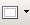

Quadres de text
Un marc és una àrea del document, definida per l’usuari, que conté text i imatges que es volen tractar com un objecte diferenciat de la resta. Al text que conté el marc se li pot donar un format diferenciat de la resta del document, i a l’objecte en si (el marc) també. Per altra banda, es poden vincular dos marcs per tal que el text que no cap en un flueixi cap al segon.
Crear un marc
Hi ha diverses maneres de crear un marc.
- Demanant Insereix | Marc… i, de moment, confirmant les opcions que es plantegen per defecte (sempre es poden modificar més endavant).
- Fent aparèixer la barra d'eines Insereix (Visualitza | Barra d'eines … | Insereix) i seleccionant la icona corresponent a Insereix marc manualment . En aquest cas, si cliqueu a la fletxa que hi ha a la dreta de la icona, podreu seleccionar des del principi el nombre de columnes de text que voleu que hi hagi al marc.
Una vegada creat el marc, se li pot canviar la mida clicant sobre els punts sensibles que apareixen en seleccionar-lo i arrossegant-los.
Moure un marc / Àncora
Una vegada creat el marc, es pot deixar a la seva posició original, però el més habitual és de moure'l a una altra localització …
De forma lliure, només cal punxar-lo amb el ratolí i arrossegar-lo al lloc que més ens interessi. Però el document va creixent i pot interessar que el marc es vagi desplaçant. Així, hi ha quatre opcions de deixar clavat (ancorat) el marc:
- Àncora a la pàgina: Fixa el marc a la pàgina actual.
- Àncora al paràgraf: Fixa el text al paràgraf actual. Si aquest canvia de pàgina, el marc també ho farà. És l'opció que es pren per defecte.
- Àncora al caràcter: Lliga el marc a un caràcter concret. Es desplaçarà amb ell.
- Àncora com a caràcter: Fa que el marc es comporti com un caràcter. Per tant, l'alçada de la línia on hi ha el marc serà l'alçada del marc.
Vincular dos marcs
També es poden vincular dos marcs del LibreOffice Writer per tal que el text que no cap al primer flueixi cap al segon. Per fer-ho, cal seguir aquests passos:
- Seleccioneu el marc que va primer (per seleccionar-lo, cliqueu-li la vora amb el ratolí).
- Cliqueu la icona Enllaça els marcs
 .
. - Cliqueu el marc que ha de quedar vinculat amb el primer.
Quan s'estableix una vinculació entre dos marcs, LibreOffice Writer mostra una línia que representa l'enllaç.
Per tal de desfer una vinculació, cal tenir-ne un de seleccionat i clicar la icona Desenllaça els marcs .
La vinculació de marcs té algunes limitacions. Només es poden vincular marcs si …:
- el segon està buit,
- tant el primer com el segon marc no estan ja vinculats com a segons amb un altre,
- tots dos són a la mateixa secció,
- un marc està dins de l'altre.
Per altra banda, encara que només s'hagi parlat de dos marcs, cal tenir clar que la cadena pot continuar i el segon es pot vincular a un tercer, el tercer a un quart …
Formatar un marc
El formatat complet del marc s'obté mitjançant el quadre de diàleg de les propietats de l'objecte (demanant Format | Marc… o clicant la icona de Propietats del marc ). Els aspectes més interessants que es poden configurar …
El primer bloc permet concretar al detall la mida i posició del marc, així com també l'ancoratge.
El segon bloc permet posar un nom al marc i enllaçar-lo amb un de previ i un de posterior, a la vegada que es pot determinar si es vol protegir el seu contingut o no.
El tercer bloc facilita la concreció de com ha de fluir el text extern al marc al seu voltant i quina separació hi ha d'haver entre aquest text i la vora del marc.
El cinquè bloc permet especificar com ha de ser la vora del marc i quina distància hi ha d'haver entre aquesta vora i el text del contingut.
El sisè bloc permet concretar quin color ha de tenir el fons del marc.
Pel que fa al setè bloc, permet configurar la distribució del text interior al marc en columnes periodístiques.
Als aspectes més rellevants del format del marc, s´hi pot accedir, també, mitjançant el menú de context que apareix en clicar amb el botó dret del ratolí damunt el marc quan aquest està seleccionat:

Una entrevista per a la revista
L'ús dels marcs és molt adequat en moltes circumstàncies, entre les quals l'elaboració d'una entrevista per a la revista escolar.
- Recupereu el document entrevistaconseller.odt.
- Formateu el document en dues columnes periodístiques amb una separació de 0,5 cm entre elles.
- Modifiqueu l'estil de paràgraf per defecte per tal que l'alineació sigui ”justificada” i faci el guionat de forma automàtica.
- Copieu l'estil per defecte creant-ne un de nou (que podeu anomenar ”Preguntes”) que tingui, com a única variant, la lletra en negreta. Apliqueu aquest nou estil a les preguntes que es fan al Conseller.
- L'entradeta de presentació del Conseller, poseu-la en cursiva.
- A la primera pàgina, creeu un marc que gairebé ocupi tota la segona columna.
- Al marc que acabeu de crear, inseriu-hi el contingut del fitxer biografiaconseller.odt.
- Cerqueu l'estil de paràgraf Contingut del marc i modifiqueu-lo per tal de posar lletra ”Arial” (o ”Elite”, segons el cas) de cos 10 punts i alineació ”Justificada”. Apliqueu aquest estil a tot el contingut del marc.
- Ara seleccioneu tot el marc i poseu de color de fons Groc pastel, i a la pestanya Tipus poseu les dades tal i com apareixen a la imatge:
.
- Aneu a la tercera pàgina i, al capdavall, creeu un marc que ocupi tota l'amplada interior de la pàgina (entre els marges esquerre i dret) i mitja pàgina d'alçada.
- Modifiqueu el format del marc per tal de posar fons Groc pastel i el Tipus com la imatge següent:
- Podeu recuperar el document entrevistaconselleracabat.odt i comparar com us ha quedat.
Fontwork
El nostre alumnat coneix aquesta part del LibreOffice Writer com el programa de fer portades, ja que permet fer espectaculars combinacions de caràcters, colors i formes per tal d'aconseguir una portada de treball força “impactant”.
Naturalment, el programa també permetrà fer cartells anunciadors força clars i de forma ràpida.
En veritat, FontWork és un subprograma extern del LibreOffice i comú a tots els mòduls de l'aplicació. Els títols que genera són tractats com un objecte particular i no formen part del text (o bé en formen part de la mateixa manera com en forma part una fotografia inserida en una pàgina d'un document).
Cridant FontWork
Per tal de crear un objecte Fontwork, cal tenir visible la barra d'eines de Dibuix (Visualitza | Barra d'eines | Dibuix) que apareix, per defecte, al capdavall de la pantalla.
- A la barra d'eines Dibuix, feu clic a la icona Galeria Fontwork .
- Us apareixerà el quadre de diàleg Galeria de Fontwork. Seleccioneu l'estil que més us agradi i cliqueu D'acord. Veureu que, al document, s'hi insereix un objecte Fontwork del tipus que heu seleccionat.
- Si feu un doble clic damunt l'objecte podreu modificar-ne el text (per defecte, apareix Fontwork) i, per exemple, podeu escriure ”Jornada de portes obertes”. Acabareu l'edició si premeu la tecla Esc o cliqueu fora del text editat.
- Si teniu seleccionat l'objecte Fontwork, veureu que apareix una barra d'eines (flotant) més. Mitjançant aquesta barra d'eines es poden concretar molts petits detalls que complementen la presentació del text.
- Si punxeu l'objecte, el podreu desplaçar per la pàgina.
- Quan deixa d'estar seleccionat, desapareix la barra d'eines Fontwork.

|
|

|
|